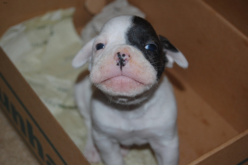
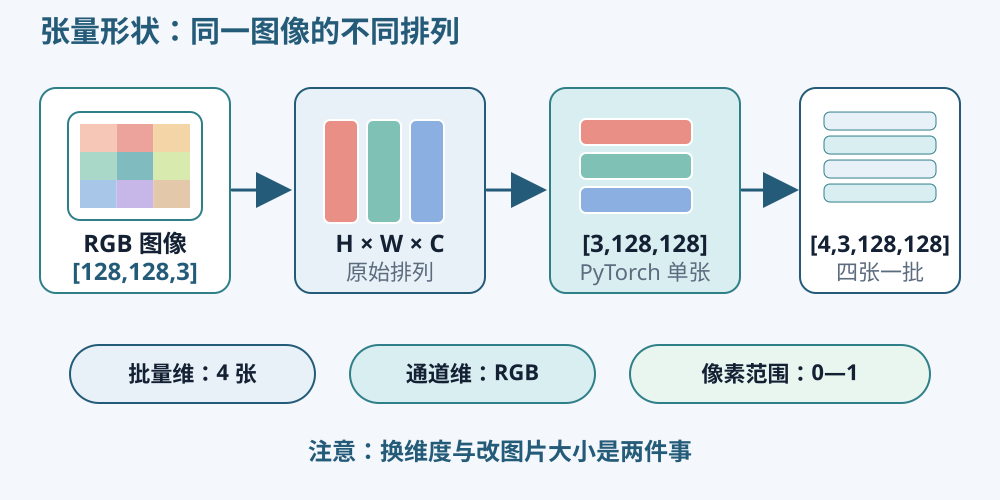

这门课程依次安排猫狗识别、宠物分割和 H&E–IHC 虚拟染色。三个项目都需要你自己完成程序。每章的 Kaggle 练习提供一小段可运行的知识例子，练习之后再把这些知识用于自己的数据、模型和实验。猫狗阶段同时学习 PPT 绘图，分割阶段练习实验比较和简短报告，病理阶段学习文献与海报表达。
猫狗照片与标签
猫 · species 1 → 类别 0

狗 · species 2 → 类别 1
课程使用 Oxford-IIIT Pet 数据。它既提供宠物照片，也提供猫狗类别、品种和像素标注，可以支持前两个项目。猫和狗是本次分类任务的两个类别；数据中的 37 个品种是另一种更细的分类，不能把品种编号直接当成猫狗标签。
官方标注文件中的 species 为 1（猫）或 2（狗）。传给本课程的二分类模型前，把它们对应为 0（猫）和 1（狗），并在自己的程序中保留这份对应关系。不能仅凭文件夹名称猜测标签；先显示几张图及其类别，人工确认。相同图像在分类与分割任务中使用不同目标：前者对应一个类别，后者对应一张像素标签图。
照片中的背景、拍摄角度、光照和动物大小都有变化。模型可能利用草地、沙发等与类别偶然相关的线索，因此检查具体错分照片也很重要。目标是识别新的照片，训练照片上的正确率并不能独立说明这一能力。
像素、颜色与张量
RGB 图像的每个位置有红、绿、蓝三个数值。普通 8 位图像把每个通道存为 0—255 的整数。读入后通常转换为浮点数，并除以 255，使它们落在 0—1。这个操作改变数值表示，图像中的对象不会因此改变。

图片常以高×宽×通道排列，PyTorch 卷积通常接收批量×通道×高×宽。对于一张 128×128 的 RGB 图像，单张张量形状为 [3,128,128]；四张图组成一批后是 [4,3,128,128]。第一个维度表示这批有几张照片，通道维度表示颜色，后两个维度表示空间位置。调整维度顺序和改变图片大小是两种不同操作。
| 对象 | 示例形状 | 需要检查的内容 |
|---|---|---|
| 单张 RGB 图像 | [3,128,128] |
通道顺序、像素范围、长宽比例 |
| 一批图像 | [4,3,128,128] |
批量大小、图片是否为相同尺寸 |
| 猫狗标签 | [4] |
整数类型，每个数为 0 或 1 |
| 分类分数 | [4,2] |
每张图两个分数，顺序与类别表相同 |
缩放时，直接把长方形压成正方形会改变动物的比例。可以先按较短边缩放，再裁剪；也可以在保留比例的前提下补边。裁剪可能去掉耳朵或身体，因此应先显示处理后的图片，再决定尺寸与方法。
Python 中的名字、列表与函数
变量名用来引用一个对象，例如图像张量或类别列表。列表保存有顺序的对象；字典使用名称寻找对应的值，适合记录学习率、图片尺寸和种子。循环重复执行一小段操作，缩进标明哪些语句属于循环。
函数把一项具体计算组织起来。读取图片、计算准确率、显示样例可以分别成为函数。输入是什么、输出是什么以及形状是什么，应能通过函数名称和使用位置看明白。遇到错误时，先检查出错这一行的输入，不必一次重写整个项目。
PyTorch 的张量具有形状、数据类型和设备三个常用属性。颜色值通常用浮点数，类别标签通常用长整型。设备可以是 CPU 或 GPU；同一次计算中的图像和模型参数需要在同一设备上。Kaggle 中的短练习可用 CPU 完成，独立训练时再根据模型和数据量选择 GPU。
数值运算与广播
张量可以逐元素加减、求均值或矩阵相乘。计算所有像素的平均亮度和分别计算三个通道的均值，得到的形状不同。理解被汇总的是哪个维度，比只记住函数名称更有用。
广播允许不同形状的张量在兼容维度上运算。例如给三个颜色通道分别减去一个均值，需要让三个数对齐通道维度。如果误对齐到宽度维度，程序有时也能运行，却执行了错误操作。用一张很小的图像检查几个具体像素，可以发现这种问题。
张量检查练习
在自己的练习副本中选择一张猫和一张狗，分别记录原始大小、缩放后的形状、数值类型与最小/最大值。把两张图组成一批，再说明四个维度各自表示什么。改变输入尺寸后，重新检查张量形状与显示结果。
练习中观察到的颜色和尺寸应该能与原照片对应。黑白颠倒、颜色异常、图片拉伸或通道数不符，都应先处理，再继续建立模型。保留这段读取和显示图片的代码，下一章需要用它核对分类数据。
资料与数据来源
Oxford-IIIT Pet 的照片、species 标注和分割标注来自数据集官方页面。下载完整数据时保留官方训练验证与测试划分；后续训练所需验证集应从官方训练验证部分划出。PyTorch 张量教程可用于查阅维度和设备操作。
在官方页面分别下载 Images 和 Annotations。解压后，images 保存照片，annotations/list.txt 记录图像名、品种编号和 species，annotations/trainval.txt 与 test.txt 给出官方划分，annotations/trimaps 保存分割标注。读取一条记录时先核对列名含义，再将不带扩展名的图像名与 .jpg 照片对应。Kaggle 练习只附少量观察样本，独立项目应另外取得完整数据，或在官方划分内选取有明确规则的子集。